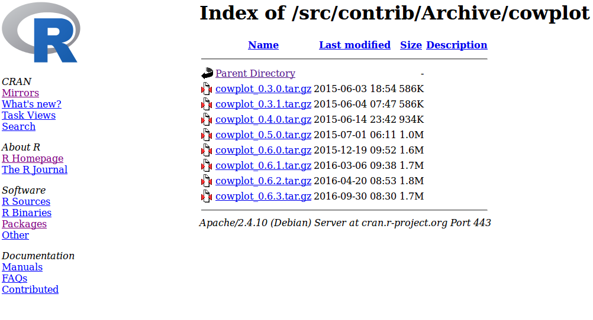

2 Getting Started in R
R is an object-orientated programming language. This means that you create objects, and give them names. You can then do things to those objects: you can perform calculations, statistical tests, make tables or draw plots. Objects can be single numbers, characters, vectors of numbers, matrices, multi-dimensional arrays, lists containing different objects and so on.
Whilst R provides its own development environment, we will use a fantastic IDE1 provided by RStudio. This is free to download, provides some neat features, and crucially, looks the same on all operating systems!
2.1 RStudio

Figure 2.1: RStudio window
The RStudio window should look something like Figure 2.1. It consists of:
- Script pane (top-left): this is essentially RStudio’s built-in text editor. It has all the usual features one would expect: syntax highlighting, automatic indentation, bracket matching, line highlighting and numbering and so on. You can open any type of text file in here, not just R scripts. (You might have to go to File > New File > R Script to open a new R script if you don’t have one already open.)
- Console pane (bottom-left): This is where you run R commands and view outputs.
- Workspace/history pane (top-right): this shows a list of all of the objects and variables that you create during a session or a history of all of the commands that have been sent to the command window during the session.
- Plot/help pane (bottom-right): this shows any plots that you create or any help files that you access.
You can alter the size of the various panes by clicking and dragging the grey bar in between each window to suit your needs. You can also change their arrangement by going to Tools > Global Options, and then selecting the Pane Layout option.
2.2 Cheat Sheets
The helpful folks at RStudio also produce a series of excellent Cheat Sheets, available here. Please note, these are updated semi-regularly as new packages are added or existing packages updated. Note also that these cheat sheets focus on the use of RStudio, and a small number of subset of packages that are developed by RStudio (e.g. tidyverse, shiny and rmarkdown). For example, a nice Cheat Sheet for RStudio itself can be found here.
I will provide links to some of these cheat sheets as we progress through the practicals, but please note that they might change over time, and older versions exist online. They are a brilliant resource where applicable.
2.3 Setting up an R session
It is worthwhile getting into a workflow when using R. General guidelines I would suggest are:
- Use a different folder for each new project / assignment. This helps to keep all data / script / output files in one self-contained place.
- Set the Working Directory for R at the outset of each session to be the folder you’ve specified for the particular assignment you’re working on. This can be done in RStudio by going to Session > Set Working Directory > Choose Directory. This sets the default search path to this folder.
- Always use script files to keep a record of your work, so that it can be reproduced at a later date.
- [Additional: I also initialise a Git repository in each project folder (unless the project is very small). This allows me to use version control to aid the development of the code as well as to allow me to roll back to earlier versions of the code if necessary. Linking to an online repository such as GitHub or BitBucket also provides an cloud-based backup service, as well as an ability to share code and collaborate. We are aiming to run a Git workshop at some point in the future, so keep your ears to the ground if you’re interested…]
We will explore the console and script panes below, dealing with the other panes as and when they arise.
2.3.1 Console Pane
The console pane provides a direct interface with R, and looks similar to command line R (in Linux and Macs), and the console pane in R for Windows. You enter commands via the standard prompt >. For example, type the following into the console pane:
10 + 5 * 3## [1] 25You can see here that R has returned a value of 25, illustrating one of R’s key features: that it can be used as an overgrown calculator, simply by entering commands into the prompt. R supports lots of basic mathematical operators, such as those found in Table 2.1.
| Symbol | Meaning |
|---|---|
+ |
addition |
- |
subtraction |
* |
multiplication |
/ |
division |
^ |
to the power |
%% |
the remainder of a division (modulo) |
%/% |
the integer part |
Meanwhile, Table 2.2 has some other ones you might need. (These are functions: just replace x with a number.)
| Function | Meaning |
|---|---|
log(x) |
\(\log_e(x)\) (or \(\ln(x)\)) |
exp(x) |
\(e^x\) |
log(x, n) |
\(\log_n(x)\) |
log10(x) |
\(\log_{10}(x)\) |
sqrt(x) |
\(\sqrt{x}\) |
factorial(x) |
\(x!\) |
choose(n, x) |
binomial coefficients: \(\frac{n!}{x!(n - x)!}\) |
gamma(x) |
\(\Gamma\left(x\right)\) for continuous \(x\) or \((x-1)!\) for integer \(x\) |
lgamma(x) |
natural log of \(\Gamma\left(x\right)\) |
floor(x) |
greatest integer \(< x\) |
ceiling(x) |
smallest integer \(> x\) |
trunc(x) |
closest integer to \(x\) between \(x\) and 0 e.g trunc(1.5) = 1, trunc(-1.5) = -1 trunc is like floor for positive values and like ceiling for negative values |
round(x, digits = 0) |
round the value of \(x\) to an integer |
signif(x, digits = 6) |
round \(x\) to 6 significant figures |
cos(x) |
cosine of \(x\) in radians |
sin(x) |
sine of \(x\) in radians |
tan(x) |
tangent of \(x\) in radians |
acos(x), asin(x), atan(x) |
inverse trigonometric transformations of real or complex numbers |
acosh(x), asinh(x), atanh(x) |
inverse hyperbolic trigonometric transformations on real or complex numbers |
abs(x) |
the absolute value of \(x\), ignoring the minus sign if there is one |
R retains a history of all the commands you have used in a particular session. You can scroll back through these using the up (↑) and down (↓) arrows whilst in the console pane. (You can even save the history—though we will discuss a better option in the next section.)
One important thing to note is that unlike a language like C, R does not require the semicolon (;) symbol to denote the end of each command. A carriage return is sufficient. A semicolon can be used to allow multiple commands to be written on the same line if required. For example,
10 + 5 * 3; sin(10)## [1] 25
## [1] -0.5440211is equivalent to
10 + 5 * 3
sin(10)## [1] 25
## [1] -0.5440211One thing to note is that if a command is incomplete, then R will change the > prompt for a + prompt. For example, typing 10 + 5 * into the console pane will result in the + prompt appearing, telling you that the previous line is incomplete i.e.
> 10 + 5 *
+ 3## [1] 25You must either complete the line or hit the Esc key to cancel the command.
2.3.2 Script pane and R scripts
The console window is the engine room of R, and one can interact directly with it. One key advantage to R is that it records all of the commands that you enter into the console (known as the command history). It is possible to save the command history, or run back through it using the arrow keys. However, a much better approach is to use the script pane to write an R script that contains all the commands necessary for a particular project. In fact, one might argue that this is probably one of the most important features of R relative to a point-and-click statistical package such as SPSS.
Put simply, R scripts are just text files that contain commands to run in R. They are vitally important for the following reasons:
- They keep a systematic record of your analysis, which enables you to reproduce your work at a later date, or can be passed to collaborators or other users to enable them to replicate your work.
- This record means that you do not have to rely on your memory to figure out what you did.
- R scripts allow you to comment your code, which means that you also won’t forget why you did it.
- In more advanced settings, R scripts can also be run in batch mode, which means that you can ping a script off to run remotely on a server somewhere without having to be sat in front of a computer manually entering commands.
- Although programs like SPSS allow outputs to be saved, R scripts contain inputs, which are much more useful, since it is easier to generate the outputs from the inputs than it is to reconstruct the likely inputs from the outputs.
- In fact, R scripts can be combined with a markup language called ‘markdown’ to generate fully reproducible documents, containing both inputs and outputs. It does this using the fantastic
knitrandrmarkdownpackages. (In fact this workshop was written usingrmarkdownand a package calledbookdown.)
Some comments:
- RStudio comes with its own text editor, but if you are not using RStudio, then there are plenty of others available.
- R is case-sensitive. If something doesn’t work, it’s often because you have failed to capitalise, or capitalised where you shouldn’t have. NEVER, EVER, EVER use Word to edit your R scripts! Word often tries to correct your grammar and is an absolute nightmare to work with when writing code. If you don’t like RStudio’s editor, then lots of lightweight and free text editors exist that you can use. By all means use Word for writing up the work (although we will see even better ways to do this in a later Literate Programming workshop), but please, NEVER use it for writing code.
In RStudio, you can open a new script in R using: File > New File > R Script.
Type the following into the script file:
## calculate the hypotenuse from a right-angled triangle
## with the two other sides equal to 3 and 4
sqrt(3^2 + 4^2)Notice that nothing has happened. All you’ve done is write some commands into a text window. However, if you highlight these lines and then hit the Run button in the top right-hand corner of the script pane (or, in Windows certainly, press Ctrl-Enter), then RStudio runs these lines in the console pane. (Alternatively, you can manually copy-and-paste these lines into the console window.) This should return:
## [1] 5Note: notice that the
#symbol here denotes a comment, such that any text after the#is ignored (up to the end of the current line). I have used a double hash here##, though this is simply because I’ve written this practical using RMarkdown (more on this later), and it seems to typeset better. This is not absolutely necessary though, since anything after the first#is ignored.
Comments are vital in code to ensure reproducibility and readability. You should ensure that all code is commented, so that both you and anyone else who wants to use your code is able to decipher it. Even if no one else is going to look at your code, it is still worthwhile to comment it. What seems obvious to you as you write a piece of code, often becomes confusing when you return to it in 6 months time and can’t remember what you did or why you did it…
It is conventional to save R script files using the suffix ‘.R’, though remember that they are simply text files, and can be viewed in any text editor. Make sure you have set up a folder to store the code for this practical in, and have changed the working directory to this folder (see the setup section), and then save this script file as something like “IntroToR.R”.
Make sure you save your script file regularly to prevent data loss!
2.3.2.1 Notes on legibility
NOTE: that I use spaces within the code to make it clearer. R does not require this, but again I think it is good practice to think about how to make you code legible. Different coders have different preferences, but personally I prefer plot(Worm.density ~ Vegetation, data = worms) over plot(Worm.density~Vegetation,data=worms). As Hadley Wickham says: “Good coding style is like correct punctuation: you can manage without it, butitsuremakesthingseasiertoread.”
Note that different coders prefer different styles—there is no universal agreement. However, it’s worth getting into the habit of writing your code neatly and with a thought towards legibility. A guide that is similar to my own is the tidyverse guide here. (Note that unlike Python, R does not require specific indentation. Instead it uses curly brackets to group lines of code together. However, indentation is still key to good legibility. An example of a tidy R script is given e.g. here.)
I tend to use script files to keep a record of all commands that need to be reproduced, but I often enter commands directly into the console window when I’m testing or visualising things. Try to keep redundant code out of your script files. In this workshop I expect you to use script files from the outset! Make sure the code is legible and commented.
2.4 R packages
R has hundreds of add-on packages that provide functionality for a wide range of techniques. These repositories are growing all of the time; some packages become redundant and are removed, others are updated, some are superceded or incorporated into others, and completely new ones appear regularly. A key part of becoming proficient with R is learning how to install and update packages.
Note: R packages can be thought of in a similar way to Matlab toolboxes or Python libraries.
The principal R package repository can be found on CRAN (the Comprehensive R Archive Network). Another popular repository, predominantly aimed at bioinformatics packages, is Bioconductor, though installation of packages through Bioconductor is more difficult than through CRAN, so we will focus on the latter only here.
Some packages are included as part of R’s base package. To load a package, you can use the library() function, passing the name of the required package (quotes are not necessary for this function). For example, to load the tidyr package, type:
library(tidyr)If this doesn’t return any error, then the package is loaded and you are now able to use any function in tidyr in your R code. R packages must contain help files and documentation in order to be included on CRAN. For example, the documentation for the tidyr package can be found here, through the Reference Manual link, plus some vignettes through the Vignettes link.
If it’s not installed, then you will need to install it:
install.packages("tidyr")This will ask that you select a repository—choosing one close-to-home is a good idea. It might also ask you to set up a local R library in your user directory. This is a good idea, so I would just accept the default if it asks.
If it installs without any errors, then you can load the library using library(tidyr) as above.
Note: You only have to install a package once (unless you update R). You have to load the library once during each session. I prefer to enter all my calls to
library()at the top of my script file, so I can quickly see which packages are required for my script to run.
Note: you can also install a package from a local ZIP file, simply download the ‘Package Source’ from CRAN, and then type:
install.packages("PATH/TO/PACKAGENAME", repos = NULL)where PATH/TO/PACKAGENAME is the path to the package source file (be careful to get the path in the correct format—Windows users might have to use \ instead of /). The repos = NULL argument tells R to look for the file locally, and not online.
2.4.1 Installing archived versions of a package
Sometimes R packages are not updated as quickly as R itself, and occasionally you might need to install an older version of a package. A really useful package to install is called devtools. This provides functions to install R packages directly from CRAN archives, which can be found by going to https://cran.r-project.org/, and clicking on the Packages link followed by the Archived link. This provides a list of older versions of a package, which can be installed using the install_version() function in devtools.
For example, I recently had an issue with a package cowplot not existing for my version of R, returning the following error message:
install.packages("cowplot")Installing package into ‘/home/tj/R/x86_64-pc-linux-gnu-library/3.2’
(as ‘lib’ is unspecified)
Warning in install.packages :
package ‘cowplot’ is not available (for R version 3.2.3)I solved this by finding an older version of the package on CRAN (by clicking on Packages then Archived):

I noted the version number, and then used a function from devtools called install_version() as follows:
library(devtools)
install_version("cowplot", version = "0.6.3", repos = "https://cran.r-project.org/")2.4.2 Development packages
In order to upload a package to CRAN, the package must pass a series of tests. The versions you find on CRAN are the stable versions (i.e. they have passed these tests and work well with the current version of R). However, developers often keep the latest development version of their package on an online repository such as GitHub. Development packages usually contain the most up-to-date functions, but are likely to contain more bugs—use them at your own risk! In addition, some packages simply aren’t available on CRAN—there is no requirement to upload in this way.
For example, the gganimate package is only available on GitHub, the source code can be found here. It can be installed using devtools as follows (don’t run the code now):
install_github("dgrtwo/gganimate")Note the syntax DEVELOPER/PACKAGENAME—this can be found from the address of the repository e.g. https://github.com/dgrtwo/gganimate.
Integrated Desktop Environment↩︎